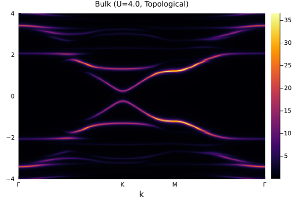
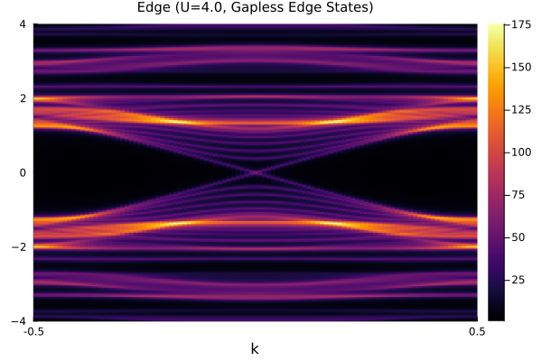
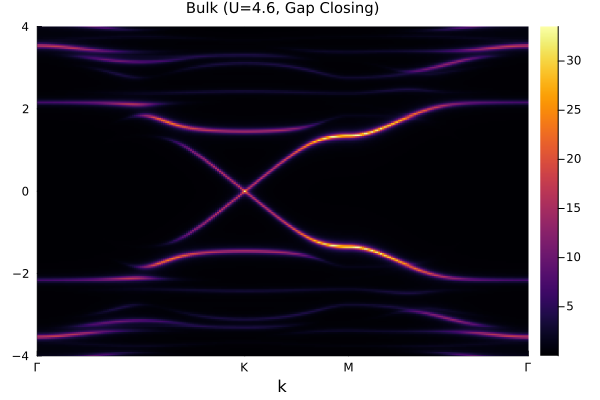
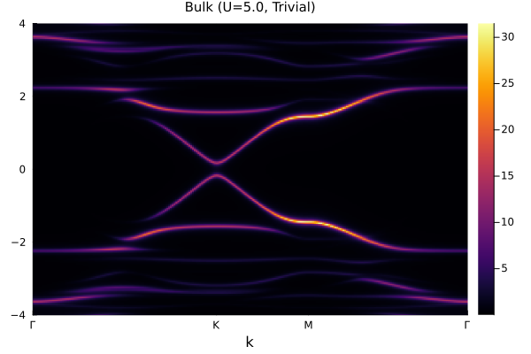

Haldane-Hubbard Model: Topological Phase Transition
Introduction
The Haldane-Hubbard model describes spinful fermions on a honeycomb lattice with nearest-neighbor hopping $t$, next-nearest-neighbor hopping $t'$ with a $\phi$-flux phase, and on-site Coulomb interaction $U$. By taking $\phi = \pi/2$ as an example, we demonstrate how the system evolves from a topological phase to a trivial insulator as $U$ increases. Using CPT, we show:
- Bulk band structure evolution across the transition (gap closing at $U_c$ and reopening)
- Edge state behavior before and after the transition (gapless edge states appear and disappear)
- Bulk-edge correspondence: the change of bulk topology is accompanied by the appearance/disappearance of gapless edge states at the boundary
The results presented here are based on our work published in New J. Phys. 21, 073016 (2019).
Bulk Model Setup
using QuantumLattices
using QuantumClusterTheories
using TightBindingApproximation
using ExactDiagonalization
using Plots
# Model parameters
parameters = (t=Complex(-1.0), t′=Complex(-0.2), U=4.0)
@inline parammap(parameters::NamedTuple) = (μ=-parameters.U/2, U=parameters.U)
# Honeycomb lattice unitcell
unitcell = Lattice([0.0, 0.0], [0.0, √3/3]; vectors=[[1.0, 0.0], [0.5, √3/2]])
# Finite cluster with periodic boundary conditions
lattice = Lattice(
[0.0, 0.0], [0.0, √3/3], [0.5, √3/2], [0.5, -√3/6], [1.0, 0.0], [1.0, √3/3];
vectors=[[1.5, √3/2], [1.5, -√3/2]]
)
# Hilbert space: single-orbital spinful fermions
hilbert = Hilbert(Fock{:f}(1, 2), length(lattice))
# Hopping terms
t = Hopping(:t, parameters.t, 1; ismodulatable=false)
t′ = Hopping(:t′, parameters.t′, 2;
amplitude=bond::Bond->1im*cos(3*azimuth(rcoordinate(bond)))*(-1)^(bond[1].site%2),
ismodulatable=false
)
# Chemical potential and Hubbard interaction
μ = Onsite(:μ, parammap(parameters).μ)
U = Hubbard(:U, parammap(parameters).U)
# Quantum number for the sub-Hilbert space
quantumnumber = ℕ(length(lattice)) ⊠ 𝕊ᶻ(0)
# CPT algorithm setup
haldane = Algorithm(
:HaldaneHubbard,
CPT(
unitcell, lattice, hilbert,
(t, t′, μ, U),
quantumnumber,
BandLanczosMethod(keepvecs=true)
),
parameters,
parammap
)
# Energy range and Brillouin zone path
es = LinRange(-4.0, 4.0, 201)
path = ReciprocalPath(reciprocals(unitcell), hexagon"Γ-K-M-Γ"; length=100);Edge Model Setup
To access edge states, we construct an open boundary geometry by stitching together multiple copies of the bulk cluster. The ntuple below specifies which sites belong to each cluster and their corresponding quantum number sector.
# Number of clusters in the edge geometry
num = 8
edge = Lattice(lattice, (1, num), ('P', 'O'))
hilbert_edge = Hilbert(Fock{:f}(1, 2), length(edge))
# CPT for edge geometry: stitching 6-site cluster together
haldane_edge = Algorithm(
:HaldaneHubbardEdge,
CPT(
edge, edge, hilbert_edge,
(t, t′, μ, U),
ntuple(i->(6(i-1)+1, 6(i-1)+2, 6(i-1)+3, 6(i-1)+4, 6(i-1)+5, 6(i-1)+6), num)=>quantumnumber,
BandLanczosMethod(keepvecs=true)
),
parameters,
parammap
);
# Path along the edge direction
path_edge = ReciprocalPath(reciprocals(edge), -0.5=>0.5; length=100);Spectral Functions Across the Phase Transition
Topological Phase ($U = 4.0 < U_c$)
In the topological phase, the system has a finite bulk gap and hosts gapless chiral edge states within the gap. These edge states are protected by the nonzero Chern number of the bulk.
Bulk spectrum:
update!(haldane; U=4.0)
spectra_topological = haldane(:EB, DynamicalSpectra(path, es); η=0.04);
plot(spectra_topological, title="Bulk (U=4.0, Topological)")
Edge spectrum:
update!(haldane_edge; U=4.0)
spectra_edge_topological = haldane_edge(:Edge, DynamicalSpectra(path_edge, es); η=0.04);
plot(spectra_edge_topological, title="Edge (U=4.0, Gapless Edge States)")
Critical Point ($U = 4.6 \approx U_c$)
At the critical point, the bulk gap closes at the $K$/$K'$ points, signaling the topological phase transition. The Chern number changes from $\pm 2$ ($\pm 1$ for each spin) to $0$.
Bulk spectrum:
update!(haldane; U=4.6);
spectra_transition = haldane(:EB, DynamicalSpectra(path, es); η=0.04);
plot(spectra_transition, title="Bulk (U=4.6, Gap Closing)")
Trivial Phase ($U = 5.0 > U_c$)
In the trivial phase, the bulk gap reopens but there are no gapless edge states within the gap. The system is an ordinary insulator.
Bulk spectrum:
update!(haldane; U=5.0);
spectra_trivial = haldane(:EB, DynamicalSpectra(path, es); η=0.04);
plot(spectra_trivial, title="Bulk (U=5.0, Trivial)")
Edge spectrum:
update!(haldane_edge; U=5.0);
spectra_edge_trivial = haldane_edge(:Edge, DynamicalSpectra(path_edge, es); η=0.04);
plot(spectra_edge_trivial, title="Edge (U=5.0, No Edge States)")Summary
Using CPT, we have successfully captured:
- The bulk topological phase transition in the Haldane-Hubbard model at $U_c \approx 4.6$
- The gap closing and reopening at the critical point
- The disappearance of gapless edge states when transitioning from topological to trivial phase
These results illustrate the bulk-edge correspondence: when the bulk is topological ($C \neq 0$), gapless edge states appear at the boundary; when the bulk is trivial ($C = 0$), these edge states disappear.
These results demonstrate that CPT is a powerful method for studying correlation-driven topological phase transitions in interacting fermionic systems.